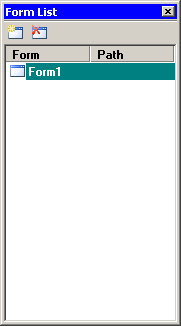

In this window you can see the list of all forms opened in the designer. You can not just switch between opened form, but also create new form or close existing. This can be done with buttons or via context menu.
